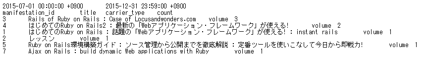
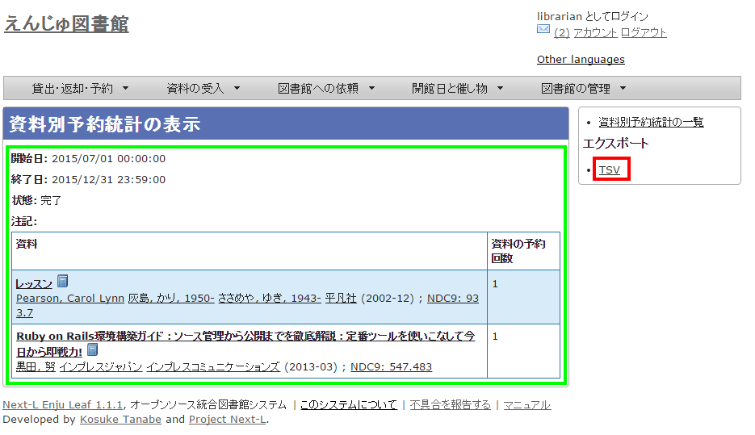
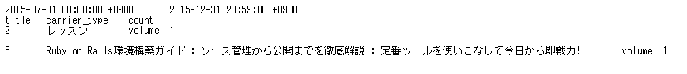

第10章 統計機能を利用する - Next-L Enju 運用マニュアル
現在のEnjuでは、利用者別と資料別に、貸出の統計を取ることができます
-
利用者別貸出統計
-
資料別貸出統計
現在のEnjuでは、利用者別と資料別で予約の統計を取ることができます
-
利用者別予約統計
-
資料別予約統計
貸出の統計を取る
Enjuでは、利用者別と資料別で貸出の統計を取ることができます。
10-1-1 利用者別貸出統計を取る
※この機能は1.1.1, 1.1.2では動作しません。1.1.2から動作します。
1. ［図書館の管理］メニューから［統計］を選択します。
2. ［利用者の貸出回数］をクリックします。
3. 右メニューの［利用者別貸出統計の新規作成］をクリックします。

4. 統計期間を設定して［集計を開始］をクリックします。

5. 「利用者別貸出統計のタスクは正常に作成されました。」のメッセージが表示され、利用者別貸出統計データ作成の準備が整いました（この段階ではまだ、統計データは実際には作成されていません）。右の[利用者別貸出統計の一覧]をクリックします。
6. 今までの利用者別貸出統計の一覧が表示されます。[状態]を見ると処理結果がわかります。 完了したものは[完了]と表示されます。結果を表示させたいレコードの[表示]リンクをクリックします。

|
【Memo】この画面は 3 の画面と同じです。[図書館の管理]メニューの[統計]をたどり、[利用者の貸出回数]リンクをクリックすればでいつでも行けます。 |
7. 統計結果が表示されます。右メニューの［TSV］をクリックし、統計データを保存します。
|
【Memo】TSVファイルの例 
|
10-1-2 資料別貸出統計を取る
1. ［図書館の管理］メニューから［統計］を選択します。
2. ［資料の貸出回数］をクリックします。
3. 右メニューの［資料別貸出統計の新規作成］をクリックします。
4. 統計期間を設定して［集計を開始］をクリックします。

5. 「資料別貸出統計は正常に作成されました。」のメッセージが表示され、統計結果が表示されます。[資料の形態別]の統計結果が表示されています。[貸出区分別]のタブをクリックします。

6. [貸出区分別]の統計結果が表示されています。[書誌別]のタブをクリックします
7 [書誌別]の統計結果が表示されています。右メニューの［TSV］をクリックし、統計データを保存します。

|
【Memo】TSVファイルの例

※どのタブを選択していても必ず[書誌別]のデータをTSVダウンロードすることになります。 |
10-2 予約の統計を取る
Enjuでは、利用者別と資料別に、予約の統計を取ることができます。
10-2-1 利用者別予約統計を取る
※この機能は1.1.1, 1.1.2では動作しません。1.1.2から動作します。
1. ［図書館の管理］メニューから［統計］を選択します。
2. ［利用者の予約回数］をクリックします。

3. 右メニューの［利用者別予約統計の新規作成］をクリックします。

4. 統計期間を設定して［集計を開始］をクリックします。
5. 「利用者別予約統計のタスクは正常に作成されました。」のメッセージが表示され、
利用者別予約統計データ作成の準備が整いました （この段階ではまだ、統計データは実際には作成されていません）。 右の[利用者別予約統計の一覧]をクリックします。

6. 今までの利用者別予約統計の一覧が表示されます。
[状態]を見ると処理結果がわかります。 完了したものは[完了]と表示されます。 結果を表示させたいレコードの[表示]リンクをクリックします。
|
【Memo】この画面は 3 の画面と同じです。[図書館の管理]メニューの[統計]をたどり、 [利用者の予約回数]リンクをクリックすればでいつでも行けます。 |
7. 統計結果が表示されます。右メニューの［TSV］をクリックし、統計データを保存します。
|
【Memo】TSVファイルの例 
|
資料別予約統計を取る
※この機能は1.1.1, 1.1.2では動作しません。1.1.2から動作します。
［図書館の管理］メニューから［統計］を選択します。
［資料の予約回数］をクリックします。

3. 右メニューの［資料別予約統計の新規作成］をクリックします。
4. 統計期間を設定して［集計を開始］をクリックします。
5. 「資料別予約統計のタスクは正常に作成されました。」のメッセージが表示され、
資料別予約統計データ作成の準備が整いました （この段階ではまだ、統計データは実際には作成されていません）。 右の[資料別予約統計の一覧]をクリックします。
6. 今までの資料別予約統計の一覧が表示されます。
[状態]を見ると処理結果がわかります。 完了したものは[完了]と表示されます。 結果を表示させたいレコードの[表示]リンクをクリックします。
|
【Memo】この画面は 3 の画面と同じです。[図書館の管理]メニューの[統計]をたどり、 [資料の予約回数]リンクをクリックすればでいつでも行けます。 |
7. 統計結果が表示されます。右メニューの［TSV］をクリックし、統計データを保存します。

|
【Memo】TSVファイルの例

|